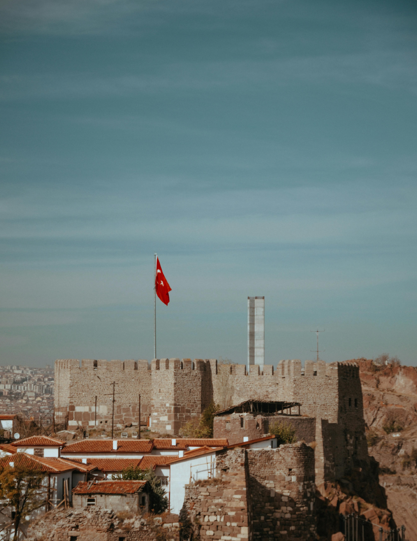

Ankara
5,550,490 Resident
Turkey
39°55′44″N 32°51′17″E
Get More Information
Ankara
View all citiesAnkara, Turkey’s cosmopolitan capital, sits in the country’s central Anatolia region. It’s a center for the performing arts, home to the State Opera and Ballet, the Presidential Symphony Orchestra and several national theater companies. Overlooking the city is Anitkabir, the enormous hilltop mausoleum of Kemal Atatürk, modern Turkey’s first president, who declared Ankara the capital in 1923.
Images Credit
Bandung
Asia Africa
City Network
Quick Link
Get in touch
Need Information?
+62 81318667479
bapperida@bandung.go.id
© BAACN - All rights reserved